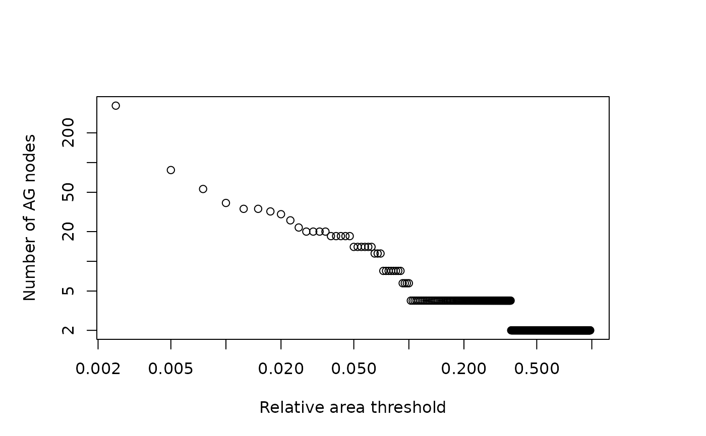

Find relationship between number of nodes and threshold area in an OCN
find_area_threshold_OCN.RdFunction that calculates relationship between threshold area and number of nodes at RN and AG level for a given OCN.
It can be used prior to application of aggregate_OCN in order to derive the drainage area threshold
that corresponds to the desired number of nodes of the aggregated network.
It is intended for use with single outlet OCNs, although its use with multiple outlet OCNs is allowed (provided that max(thrValues) <= min(OCN$CM$A)).
Arguments
- OCN
A
riverobject as produced bylandscape_OCN- thrValues
Vector of values of threshold drainage area (in squared planar units) for which the respective number of nodes at the RN and AG levels are computed. Note that it must be
max(thrValues) <= min(OCN$CM$A), otherwise the catchment(s) with area lower thanmax(thrValues)degenerate to a network with zero nodes at the RN/AG level.- maxReachLength
Maximum reach length allowed (in planar units). If the path length between a channel head and the downstream confluence is higher than
maxReachLength, the reach starting from the channel head will have a length up tomaxReachLength, while the next downstream pixel is considered as a new channel head, from which a new reach departs.- streamOrderType
If
"Strahler", Strahler stream order is computed; if"Shreve", Shreve stream order is computed.- displayUpdates
If
1, progress updates are printed in the console while the function is running. If0, no updates are printed.
Value
A list whose objects are listed below.
thrValuesCopy of the input vector with the same name.
nNodesRNVector (of the same length as
thrValues) of number of nodes at the RN level resulting from the aggregation process with a threshold area values specified bythrValues.nNodesAGVector (of the same length as
thrValues) of number of nodes at the AG level resulting from the aggregation process with a threshold area values specified bythrValues.drainageDensityVector (of the same length as
thrValues) of values of drainage density of the river network resulting from the aggregation process with a threshold area values specified bythrValues. Drainage density is calculated as total length of the river network divided by area of the lattice. It is expressed in planar units^(-1).streamOrderVector (of the same length as
thrValues) of values of maximum stream order attained by the river network, resulting from the aggregation process with a threshold area values specified bythrValues.
Examples
# 1) derive relationship between threshold area and number of nodes
OCN <- landscape_OCN(OCN_20)
thr <- find_area_threshold_OCN(OCN)
# log-log plot of number of nodes at the AG level versus
# relative threshold area (as fraction of total drainage area)
old.par <- par(no.readonly = TRUE)
par(mai = c(1,1,1,1))
plot(thr$thrValues[thr$nNodesAG > 0]/OCN$CM$A,
thr$nNodesAG[thr$nNodesAG > 0], log = "xy",
xlab = "Relative area threshold", ylab = "Number of AG nodes")

par(old.par)